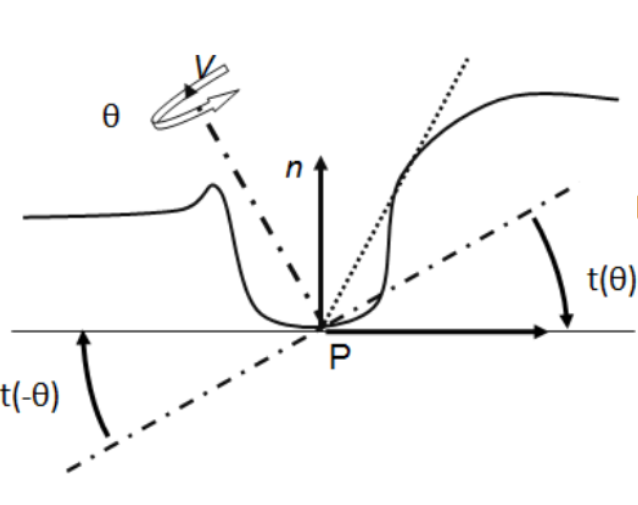

HBAO
今天来玩玩HBAO，目前URP仅有SSAO，HDRP则用的是GTAO。先在URP实现个HBAO，如果还有余力的话就再实现GTAO吧。
原理啥的就不详细写了，各种文章一大堆，就先简单说个大概。
SSAO
先看URP自带的SSAO，别看Shader里定义了一堆pass，除了第一个SSAO_Occlusion，其他全是各种模糊。
详细看看第一个pass
大致流程就是
- 先针对天空盒以0退出
- 对于超出了用户设定的Falloff的值也提前退出
- 获取法线（直接采样或者从深度推算）
- 从深度重建视线坐标
- 然后就是遍历每个采样点
- 采样蓝噪声随机在半球上取点
- 然后转换成裁切坐标？
- 计算Z（深度）同时得出uv坐标
- 用UV再去采样深度
- 确保再次用UV采样的点在半球内
- 同样重建第二次用UV采样的点的坐标
- 依据和法线的夹角与长度确定对AO的贡献。
HBAO
先看原文，很精简，只有一页。干脆全篇翻译一下吧。
介绍
环境光遮蔽是一种光照模型，对于漫反射表面上某点，通过其直接可见的遮挡，来近似计算出到达的光线数量。它让人可感知到物体的曲率和空间的接近关系。与Mittring 2007和Shanmugam and Arikan 2007类似，我们提出了一种实时环境光遮蔽算法，作为后处理，主要基于眼睛角度的深度图像。该方法不需要场景相关的预计算，适用于动态场景。我们提出的方法不存在Shanmugam and Arikan 2007中的过度遮挡问题，并且与Mittring 2007不同，采样仅局限于影响半径内。
我们给定下述形式表述一给定表面的点P处的环境光遮挡A。
$$
\begin{equation}
A=1-\frac{1}{2π} \int_{ω}^{} V(\stackrel{→}{ω})W(\stackrel{→}{ω})dω
\tag*{(1)}
\end{equation}
$$
对每个角度都计算遮挡与否，0或者1，然后乘以影响系数后累加。
普通的SSAO就是这么计算的，随机取点，判断是否遮挡。
这里V表示法向单位半球ω上的可见性，返回1表示一束光线从P点开始沿着$\stackrel{→}{ω}$方向与遮挡物相交，否则返回0，W是一个线性衰减函数。
HBAO
我们使用一球面坐标系，有一与视线$\mathop{V}\limits^{\rightarrow}$对齐的天顶轴，方位角θ与仰角α（见图2a）。

与Max 1986的水平映射类似，我们通过有符号的水平角h(θ)定义的水平线来分割单位球体（见图2b）。
简单理解就是h(θ)表示θ方向上斜率最大的那个仰角。
假设P的邻域是连续的高度场，通常在地平线以下追踪的光线已知与遮挡物相交，因此可以省略这些光线的相交测试。在连续高度场的假设下，方程1可以重写为：
$$
\begin{equation}
A=1-\frac{1}{2π} \int_{θ =-π}^{π}\int_{α = t(θ )}^{h(θ )}
W(\stackrel{→}{ω})cos(α )dα dθ
\tag*{(2)}
\end{equation}
$$
所以最终是对仰角在t(θ)与h(θ)之间的射线求遮蔽值。
这里还隐含了一个定义就是只要求出了最大的仰角，那么其之下的仰角也都是必定遮蔽的，这就是作者提出要求连续高度场的意思。
我们使用线性衰减函数W(θ) = max(0,1−r(θ)/R)，其中r(θ) 是 P 和 $\stackrel{→}{ω}$
方向上的地平点之间的距离，R
是半径。在这种情况下，
$$
\begin{equation}
A=1-\frac{1}{2π} \int_{θ =-π}^{π}(sin(h(θ)) -sin(t(θ))) W(θ)dθ
\tag*{(3)}
\end{equation}
$$
这里的W(θ)指的不是之前的$W(\stackrel{→}{ω})$，指的是整体上在θ这个方位角的切面上的衰减。
图像空间积分
我们的算法将每像素的深度和眼空间法线作为输入。对于每个像素，我们计算其眼空间的位置P，并且我们通过使用图像空间的不同方向和步长，来对存储在深度图像中的高度场进行采样，使用蒙特卡洛方法，对等式3进行积分。
我们在图像空间选取围绕着当前像素的Nd个方向θ，这些方向对应于眼空间中Z轴周围的方向（在图2a中表示为V）。
对于每个角度θ，我们通过在图像空间中沿着线段来采样深度图像，并以此计算地平线角度h(θ)。
受影响的眼空间的半径R被投影到图像平面，并分为等长度的Ns个步骤。
为了找到方向θ上的地平线角度，我们首先计算切线角度t(θ)，并将视线射线与由P和表面法线$\stackrel{→}{n}$定义的切平面相交。
然后我们沿着方向θ在深度图像中前进，并计算D = Si − P，其中Si是给定样本Si的重建眼空间位置。
基于仰角α(Si) = atan(−D.z/||D.xy||)，地平线角度h(θ)是max(t(θ),α(Si),i=1..Ns)，其中Ns是每个方向的步骤数。我们忽略满足||Si − P|| > R的样本。因为D.z必须是与偏移D.xy相关联的确切深度，所以我们始终确保在纹素中心进行采样。为此，我们将沿着每个方向的样本的纹理坐标捕捉到最近的纹素中心（见图2c）。
为了将带状伪影换成噪声，我们会对每个像素随机抖动步长，并对每个像素随机旋转Nd个均匀方向。尽管通常使用单个深度层可以产生合理的结果，但也可以通过使用多个层次来扩展，例如前后两个面。
Shader 实现
直接贴代码吧，大部分取自Nvidia的示例仓库
float Falloff(float DistanceSquare)
{
return DistanceSquare * _NegInvR2 + 1.0;
}
float ComputeAO(float3 p, float3 n, float3 s)
{
float3 v = s - p;
float VdotV = dot(v, v);
float NdotV = dot(n, v) * rsqrt(VdotV);
return clamp(NdotV - _NDotVBias, 0, 1) * clamp(Falloff(VdotV), 0, 1);
}
float3 FetchViewPos(float2 uv)
{
float rawDepth = SampleDepth(uv);
float3 viewPos = ComputeViewSpacePosition(uv, rawDepth,UNITY_MATRIX_I_P);
return viewPos;
}
float random(float v)
{
return frac(sin(v * 42.5) * 43758.5453123);
}
float4 GetJitter(float2 uv)
{
// (cos(Alpha),sin(Alpha),rand1,rand2)
// return textureLod( texRandom, (gl_FragCoord.xy / AO_RANDOMTEX_SIZE), 0);
float Alpha = SAMPLE_BLUE_NOISE((uv + BlueNoiseOffset) * BlueNoiseScale);
Alpha *= 2.0 * PI;
return float4(cos(Alpha), sin(Alpha), random(Alpha), random(Alpha + 57));
}
float2 RotateDirection(float2 Dir, float2 CosSin)
{
return float2(Dir.x * CosSin.x - Dir.y * CosSin.y,
Dir.x * CosSin.y + Dir.y * CosSin.x);
}
//----------------------------------------------------------------------------------
float3 ComputeCoarseAO(float2 FullResUV, float RadiusPixels, float4 Rand, float3 ViewPosition, float3 ViewNormal)
{
// Divide by NUM_STEPS+1 so that the farthest samples are not fully attenuated
float StepSizePixels = RadiusPixels / (_NUM_STEPS + 1);
const float Alpha = 2.0 * PI / _NUM_DIRECTIONS;
float AO = 0;
for (float DirectionIndex = 0; DirectionIndex < _NUM_DIRECTIONS; ++DirectionIndex)
{
float Angle = Alpha * DirectionIndex;
// Compute normalized 2D direction
float2 Direction = RotateDirection(float2(cos(Angle), sin(Angle)), Rand.xy);
// Jitter starting sample within the first step
float RayPixels = (Rand.z * StepSizePixels + 1.0);
for (float StepIndex = 0; StepIndex < _NUM_STEPS; ++StepIndex)
{
float2 SnappedUV = round(RayPixels * Direction) / _ScreenParams.xy + FullResUV;
float3 S = FetchViewPos(SnappedUV);
// return S;
RayPixels += StepSizePixels;
AO += ComputeAO(ViewPosition, ViewNormal, S);
}
}
AO /= _NUM_DIRECTIONS * _NUM_STEPS;
return clamp(1.0 - AO * 2, 0.0, 1.0);
}
half4 HBAO(Varyings input) : SV_Target
{
UNITY_SETUP_STEREO_EYE_INDEX_POST_VERTEX(input);
float2 uv = input.texcoord;
float3 ViewPosition = FetchViewPos(uv);
float3 worldNormal = SampleNormal(uv);
float3 ViewNormal = TransformWorldToViewNormal(worldNormal);
ViewNormal.z = -ViewNormal.z;
float RadiusPixels = _RadiusToScreen / ViewPosition.z;
float4 Rand = GetJitter(uv);
float AO = ComputeCoarseAO(uv, RadiusPixels, Rand, ViewPosition, ViewNormal);
AO = pow(AO, 2);
// AO = 1 - AO;
return float4(AO, AO, AO, 1);
}与Lit整合
最简单的方式就是直接修改原SSAO的shader然后仅替换计算部分， 这样就无需修改原Lit。或者想完善一点就单独增加一个Feature，仿照SSAO的写法，单独写入一张RT，然后再修改Lit取采样这张AO。但是很多URP的函数没有暴露出来，比如RenderGraph，所以还得cloneURP的仓库去改URP源码。这就先放一放吧，等实现了GTAO再放一起来做吧。